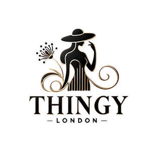

Trade Mark Journal No.2025/011 14 March 2025
UK00004140038 21 December 2024 (18,25)

- Class 18
- Small bags for men; Handbags for men; Bags; Bags for clothes; Ladies handbags; Handbags for ladies; Garment bags; Bags for sports clothing; Athletic bags; Toiletry bags; Athletics bags; Luggage, bags, wallets and other carriers; Leather bags and wallets; Bags for sports; Sports bags; Luggage bags; Tote bags; Make-up bags; Bags for climbers; Leather bags; Shoe bags; Sport bags; Belt bags and hip bags; Makeup bags; Carrying bags; Garment bags for travel; Bags (Garment -) for travel; Duffle bags; Bags for carrying animals; Sling bags for carrying babies; Bags for umbrellas; Casual bags; Baby carrying bags; Gym bags; Bags for campers; Cloth bags; Knitting bags; Knitted bags; Carry-on bags; Bags for carrying pets; Flexible bags for garments; Duffel bags; Cosmetic bags; Sling bags for carrying infants; Nappy bags; Handbags, purses and wallets; Grocery tote bags; Textile shopping bags; Messenger bags; Leather shopping bags; Travelling bags [leatherware]; Travelling bags; Traveling bags; Travel bags; Bags for travel; Hiking bags; Diaper bags; Toilet bags; Beach bags; Carry-all bags; Shoe bags for travel; Cross- body bags; Crossbody bags; Waist bags; Garment bags for travel made of leather; Hand bags; Canvas bags; Wash bags for carrying toiletries; School bags; Bags for school; Nose bags [feed bags]; Bags (Nose -) [feed bags]; Sling bags; Wheeled bags; Backpacks for carrying babies; Work bags; Camping bags; Clutch bags; Waterproof bags; Mesh bags for shopping; Mesh shopping bags; Drawstring bags; Animal carriers [bags]; Frames for bags [structural parts of bags]; Bum bags; Trunks and traveling bags; Duffel bags for travel; Reusable shopping bags; Trunks and travelling bags; Belt bags; Canvas shopping bags; Hunting bags; Towelling bags; Bags made of leather; Hip bags.
- Class 25
- Corsets [clothing, foundation garments]; Garments for protecting clothing; Leather garments; Linen (Body -) [garments]; Body linen [garments]; Sleeping garments; Ready-to-wear clothing; Knitwear [clothing]; Religious garments; Silk clothing; Clothing; Knitted clothing; Sports garments; Foundation garments; Kerchiefs [clothing]; Denims [clothing]; Gabardines [clothing]; Woolen clothing; Under garments; Embroidered clothing; Veils [clothing]; Linen clothing; Aprons [clothing]; Down garments; Jackets [clothing]; Fabric belts [clothing]; Cashmere clothing; Jerseys [clothing]; Clothing layettes; Layettes [clothing]; Bandeaux [clothing]; Clothes; Quilted jackets [clothing]; Woven clothing; Capes (clothing); Cowls [clothing]; Playsuits [clothing]; Parts of clothing, footwear and headgear; Undergarments; Headbands for clothing; Headbands [clothing]; Gloves as clothing; Gloves [clothing]; Oilskins [clothing]; Shorts [clothing]; Furs [clothing]; Foulards [clothing articles]; Linings (Ready-made -) [parts of clothing]; Ready-made linings [parts of clothing]; Bottoms [clothing]; Clothing of leather; Leather clothing; Leather (Clothing of -); Corsets being foundation clothing; Corsets [foundation clothing]; Collars [clothing]; Hoods [clothing]; Maternity clothing; Bodies [clothing]; Latex clothing; Trunks being clothing; Mitts [clothing]; Tops [clothing]; Bra straps [parts of clothing]; Combinations [clothing]; Paper hats for use as clothing items; Visors [clothing]; Belts for clothing; Belts [clothing]; Mufflers [clothing]; Muffs [clothing]; Jackets being sports clothing; Gloves for apparel; Party hats [clothing]; Hats; Shoes; Insoles[forshoes and boots]; Insoles for shoes and boots; Dress shoes; Hats (Paper -) [clothing]; Paper hats [clothing]; Tongues for shoes and boots; Wooden shoes [footwear]; High-heeled shoes; Beanie hats; Pullstraps for shoes and boots; Fashion hats; Rubber shoes; Leather shoes; Shoes for casual wear; Baseball shoes; Esparto shoes or sandals; Bucket hats; Toques [hats]; Slip-on shoes; Fittings of metal for boots and shoes; Bobble hats; Fur hats; Fascinator hats; Esparto shoes or sandles; Mitres [hats]; Wooden shoes; Soccer shoes; Baseball hats; Sandals and beach shoes; Sneakers [footwear]; Shoes for leisurewear; Ski hats; Baby shoes; Rain hats; Tennis shoes; Bootees (woollen baby shoes); Heel pieces for shoes; Rain shoes; Waterproof shoes; Sports caps and hats; Canvas shoes; Knitted baby shoes; Riding shoes; Protective metal members for shoes and boots; Sports shoes; Golf shoes; Basketball shoes; Football shoes; Volleyball shoes; Woolly hats; Snowboard shoes; Hockey shoes; Dance shoes; Miters [hats]; Beach hats; Roller shoes; Hiking shoes; Baseball caps and hats; Ballet shoes; Mountaineering shoes; Athletic shoes; Sport shoes; Jogging shoes; Shoes for infants; Stiffeners for shoes; Clothing for horse-riding [other than riding hats]; Cloche hats; Boots; Cycling shoes; Boxing shoes; Bowling shoes; Running shoes; Beach shoes; Walking shoes; Paper hats for wear by nurses; Top hats; Work shoes; Fake fur hats; Sun hats; Yoga shoes; Flip-flops for use as footwear; Sneakers; Apres-ski shoes; Athletics shoes; Golf clothing, other than gloves; Studs for football shoes; Lace boots; Gymnastic shoes; Nursing shoes; Boas [clothing]; Leisure shoes; Heel protectors for shoes; Rugby shoes; Shoes soles for repair; Inner socks for footwear; Foot volleyball shoes; Shoes for foot volleyball; Insoles for footwear; Footwear for men and women; Underwear for women; Footwear for women; Coats for women; Underclothing for women; Suspender belts for women.
THINGY LONDON LIMITED